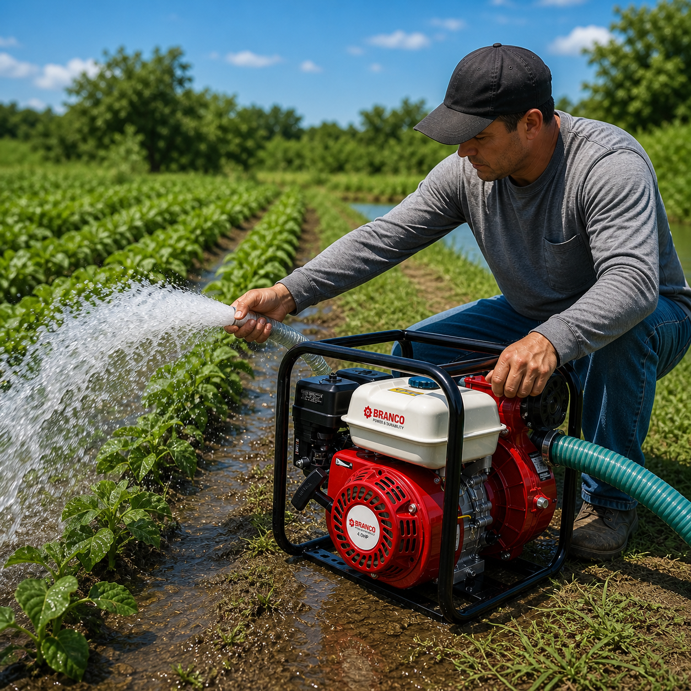

Distribuidores oficiales de tecnología brasilera BRANCO. Equipos robustos diseñados para la máxima eficiencia agrícola e industrial.
Contamos con motobombas de caudal autocebante a gasolina de excelente desempeño, diseñadas específicamente para labores de transporte de agua en aplicaciones de riego por trasiego o labores agrícolas en general, abastecimiento de agua y drenajes.
Estas motobombas son ideales para mover grandes volúmenes de agua en relación con su tamaño y potencia, garantizando una operatividad constante incluso en las condiciones más exigentes del sector agroindustrial.
Como distribuidores oficiales, nuestra misión es proveer equipos que combinen la ingeniería brasilera de precisión con la durabilidad necesaria para el trabajo diario, asegurando un soporte técnico de excelencia.

Proveer soluciones de bombeo de alta calidad respaldadas por tecnología brasilera BRANCO, ofreciendo equipos confiables, duraderos y de alto rendimiento, junto con asesoría experta y un servicio de excelencia.
Consolidarnos como el distribuidor de referencia para equipos de bombeo brasileros, reconocidos por nuestra integridad, calidad técnica y compromiso inquebrantable con el éxito de nuestros clientes.
Los principios que guían cada decisión que tomamos.
Solo trabajamos con equipos que cumplen los más altos estándares de fabricación brasilera. Calidad que se nota en el campo.
Estamos dedicados a la satisfacción total, brindando equipos que nunca se detienen cuando el trabajo es crítico.
Nuestras motobombas ofrecen una relación potencia-tamaño líder en el mercado para un transporte de agua eficiente.
Las motobombas BRANCO son el resultado de años de desarrollo enfocados en mover grandes volúmenes de agua con agilidad. Su diseño compacto no sacrifica potencia, permitiendo un traslado sencillo y una instalación rápida.
Ideales para el sector agrícola y civil, estos equipos aseguran que el suministro de agua sea constante y confiable, optimizando los tiempos de riego y evacuación.
Ver CatálogoDescubre la línea completa de motobombas de caudal BRANCO.
Ver Tienda